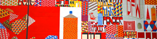

Yuichi YAZAKI
Yuichi is a designer based in Tokyo and has been active in the following areas:
Data Visualization/Storytelling

It's about a communication based on the facts & datasets using visualization. He has an insatiable appetite for information. He has a plan to make a platform of public and economy info with his friends which people can tell stories with the basis of the fact.
Toy Consulting
It's about a non-verbal communication. As a toy consultant, he is exploring ways of communication through toys and is making pattern-language of what people feel comfortable physiologically.
UX/IX design
He is an interface designer with about 10 years of experience for designing the user experience of the interactive products & services. He works for both major traditional companies and venture companies.
Data Visualization/Storytelling
Storytelling
He and a friend has been preparing a storytelling presentation which is based on the World Values Survey that is very interesting one. It is a summary for each country that the "what do they think" about the people theirself. They are gonna verify that "is it actually so" with the other statistical data. And this survey tells Japanese are most "rational and secular" people in the world. So we also introduce "rational and irrational at the same time" Japanese that you don't know.
Exhibition
They are not so-called data visualization but storytelling. The one is entitled 'drawingTokyo' using Flash, a projecter and a webcam, you can draw pictures related to old-school Tokyo. Another one is a collaboration with the artist Yoriko Youda and it's a paper product. Her works are just like a storytelling based on the cultures of Japan and China.
Lightning talk
The one is the event called ‘Visual Complexity publishing event′ and talked about ‘EYEO Festival 2012’. Another one is about how to avoid from 'compiling error' when you use openFrameworks with XCodes on OSX.
Toy consulting
Workshop
The one is about making pattern-language during the workshops (now 5 times). Another one is a workshop in hands-on style making instruments with old toys which nobody wants to have.
Lightning talk
This is a lightning talk about 'visceral design 4 interaction' workshop.
Volunteer activities
As a toy consultant, he has been playing with 0-10 years old boys or girls and their parents at Tokyo Toy Museum about once a month.
UX/IX design for digital devices
for Smartphones
He has been making UX/UI for service based on native app/website for smartphones too. Sometimes he has take a roll of information architecture.
- News Days - Convenience store by JR East
- Patto - B2B CMS service distributing native apps
for digital TVs
He had been making 10-feet UI with 'T-navi' for 4 years and has been making several services UI design.
- demo site (GoogleTV)
- T-navi ('VIErA' a Panasonic platform)
- Play on Living (for 'T-navi')
- Rakuten (for 'acTVila' )
- SkyPerfecTV(concept making)
for digital devices
The one is UI for a digital camera released by the fab-less venture company named Cerevo. Another one is for Automotive navigation UI with Japanese big motor company R&D division in Mountain View.
for PCs
He has been making UX/UI for service based on website for PC too. Sometimes he has take a roll of information architecture.
Logos for web services
Sometimes he has been in charge of visual identity for web service.
Location
Akihabara, Tokyo
Akihabara is a major shopping area for electronic, computer, anime, games and otaku goods, including new and used items. The town is also known for weird otaku culture like Meido or boys disguising like girls. photo by Danny Choo
3331
His office is at 3331, a space in which leading artists and creatives have the freedom to present their diverse expressions in Akihabara.
where he wants to be
His heart is at Tokyo, but also at Brooklyn, Minneapolis and NYC.